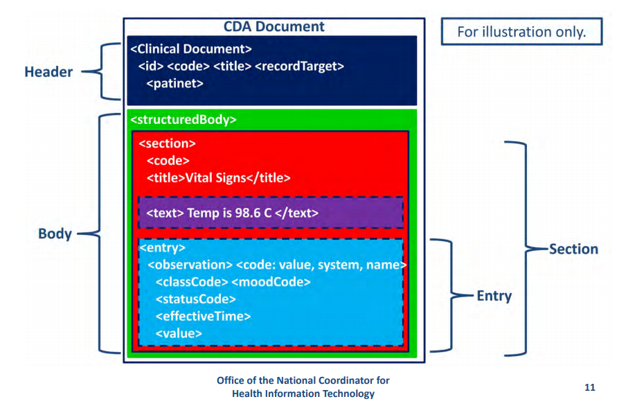
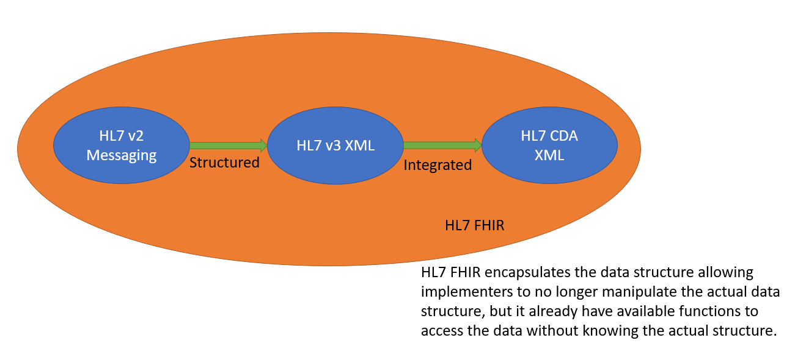
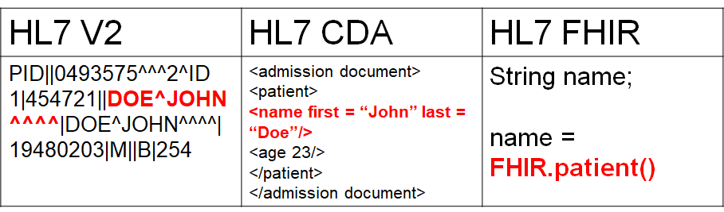
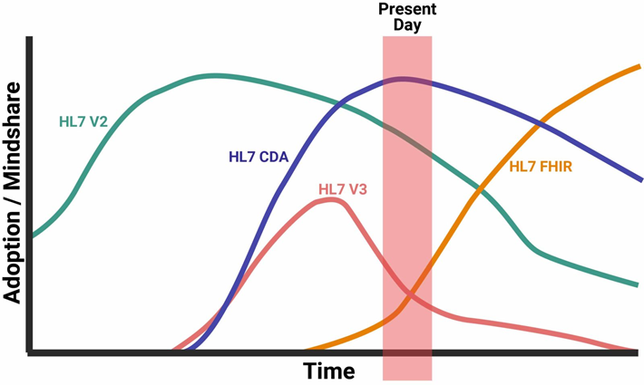
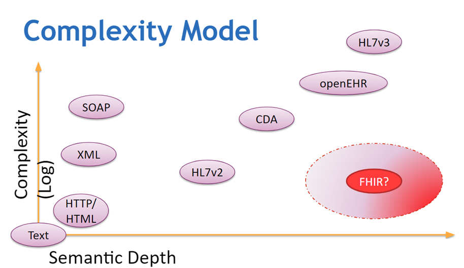
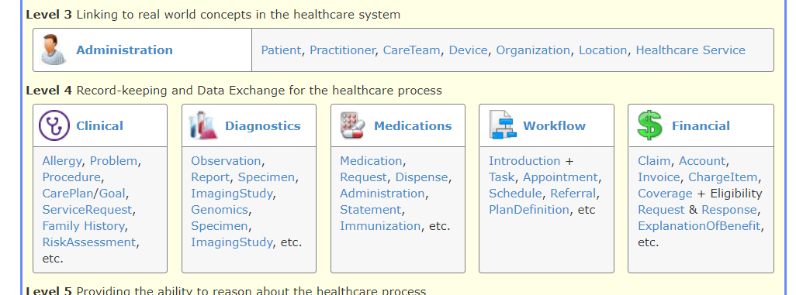

In 2030, a patient will enter a clinic to have his regular check-up. Upon entering the clinic, the receptionist nurse will bring out her phone and ask the patient for a copy of his ID for the ID number. The nurse will just scan the ID using an application she downloaded online for free. She will then put the patient’s ID number in a web portal to obtain vital health data. She will see that the patient is wearing Apple Watch, and she will request if she can transfer the heart beat data, and sleeping record from the watch to her application.
The patient will wait at the Lobby until called. Once called, the Doctor, using her own mobile app, costing 2$ will receive the patient’s records from the receptionists. It now includes the Apple Watch data. She will also view the patient’s past medical history by querying it from an online record repository. This will also contain records from other facilities.
After the check-up, the patient will be asked by the receptionist to log in to a payment app. Since the patient has his own health insurance, the patient will just share his ID to the payment app and it will automatically make a claim to the insurance provider.
This is the future of digital health. There will be no enterprise Electronic Medical Records (EMRs) or a single monolithic Electronic Health Record (EHR) or Hospital Information System (HIS). Facilities will be using small apps made by startups for each of the workflows. There will be an admission app, a consultation app, and a monitoring app. Data from wearables such as Fitbit or Apple Watch will be available to health providers. Piece-wise health data will be collected and this cannot be done using existing standards such as HL7V2 or HL7 CDA. This requires the use of APIs and the sharing of data from a server. It is envisioned that these workflows would flourish with the adaption of HL7 FHIR.
Introduction to HL7 Standards
HL7 V2, V3, CDA, and FHIR are the health data exchange standards that were released by the Health Level 7 (HL7) International group.
The Health Level 7 (HL7) International group released HL7 V2, V3, CDA, and FHIR health data exchange standards. As health data exchange standards, these are used widely by EHRs/EMRs around the world today. Each of the above-mentioned standards was developed using a different framework and mindset.
A. HL7 V2
Health Level Seven Version 2 (V2) is a purely messaging standard that allows the exchange of clinical data between systems. It is designed to support a central patient care system as well as a more distributed environment where data resides in departmental systems. (Source: HL7 V2 Briefer)
Benefits:
As stated on the official website, the following are the benefits of using V3:
- Supports the majority of the common interfaces used in the healthcare industry globally
- Provides a framework for negotiations of what is not in the standard
- Reduces implementation costs
- Generally backward compatible
Message Structure:
An HL7 V2 message is composed of texts, pipes, and hats.
MSH|^~\&|GHH LAB|ELAB-3|GHH OE|BLDG4|200202150930||ORU^R01|CNTRL-3456|P|2.4<cr>
PID|||555-44-4444||EVERYWOMAN^EVE^E^^^^L|JONES|19620320|F|||153 FERNWOOD DR.^
^STATESVILLE^OH^35292||(206)3345232|(206)752-121||||AC555444444||67-A4335^OH^20030520<cr>
OBR|1|845439^GHH OE|1045813^GHH LAB|15545^GLUCOSE|||200202150730|||||||||
555-55-5555^PRIMARY^PATRICIA P^^^^MD^^|||||||||F||||||444-44-4444^HIPPOCRATES^HOWARD H^^^^MD<cr>
OBX|1|SN|1554-5^GLUCOSE^POST 12H CFST:MCNC:PT:SER/PLAS:QN||^182|mg/dl|70_105|H|||F<cr>
B. HL7 V3
The Health Level Seven Version 3 (V3) provides a full set of messages, data types, and terminologies. The V3 specification is built around subject domains that provide storyboard descriptions, trigger events, interaction designs, domain object models derived from the Reference Information Model (RIM), hierarchical message descriptors (HMDs) and a prose description of each element. Implementation of these domains further depends upon a non-normative V3 Guide and normative specifications for data types; the XML technical specifications (ITS) or message wire format; message and control “wrappers”, and transport protocols. (Source: HL7 V3 Briefer)
Benefits:
As stated on the official website, the following are the benefits of adapting V3:
- Focuses on semantic interoperability by specifying that information be presented in a complete clinical context that assures that the sending and receiving systems share the meaning (semantics) of the information being exchanged
- Designed for universal application so that the standards can have the broadest possible global impact and yet be adapted to meet local and regional requirements
- Provides a consistent representation of data laterally across the various HL7 domains of interest and longitudinally over time as new requirements arise and new fields of clinical endeavor are addressed
- Allows implementers to take advantage, at any point in time, of the latest and most effective implementation technologies available
- Assures consistent development and the ability to store and manipulate the specifications in robust data repositories rather than as word-processing documents
Message Structure:
Messages and electronic documents are expressed in XML documents, which is totally different from the v2. The object data are included as sub-data in the XML tags.
<observationEvent>
<id root="2.16.840.1.113883.19.1122.4" extension="1045813"
assigningAuthorityName="GHH LAB Filler Orders"/>
<code code="1554-5" codeSystemName="LN"
codeSystem="2.16.840.1.113883.6.1"
displayName="GLUCOSE^POST 12H CFST:MCNC:PT:SER/PLAS:QN"/>
<statusCode code="completed"/>
<effectiveTime value="200202150730"/>
<priorityCode code="R"/>
<confidentialityCode code="N"
codeSystem="2.16.840.1.113883.5.25"/>
<value xsi:type="PQ" value="182" unit="mg/dL"/>
<interpretationCode code="H"/>
<referenceRange>
<interpretationRange>
<value xsi:type="IVL_PQ">
<low value="70" unit="mg/dL"/>
<high value="105" unit="mg/dL"/>
</value>
<interpretationCode code="N"/>
</interpretationRange>
</referenceRange>
C. CDA
The HL7 Version 3 Clinical Document Architecture (CDA) is part of the HL7 V3 with a focus on the actual clinical documents. CDA is a document markup standard that specifies the structure and semantics of “clinical documents” for the purpose of exchange between healthcare providers and patients. It defines a clinical document as having the following six characteristics: 1) Persistence, 2) Stewardship, 3) Potential for authentication, 4) Context, 5) Wholeness and 6) Human readability.
A CDA can contain any type of clinical content but typically would contain Discharge Summary, Imaging Report, Admission & Physical, Pathology Report and/or more. The most popular use is for inter-enterprise information exchange, e.g. US Health Information Exchange (HIE). (Source: HL7 V3 CDA Briefer)
Benefits:
As stated on the official website, the following are the benefits of CDA:
- Supports the exchange of clinical documents between those involved in the care of a patient
- Supports the re-use of clinical data for public health reporting, quality monitoring, patient safety, and clinical trials
- Can be reused in multiple applications
Message Structure:
Since it is basically a V3, CDA is based on the XML.

D. FHIR
HL7 Fast Healthcare Interoperability Resources (FHIR) standards use RESTful APIs as its data access model. FHIR combines the best features of HL7’s Version 2, Version 3 and CDA product lines while leveraging the latest web standards and applying a tight focus on implementation The building blocks of FHIR is a set of modular components called “Resources”. These resources, since modular, can be pick-and-match depending on one’s needs and be assembled into working systems that solve real-world clinical and administrative problems. FHIR is suitable for use in a wide variety of contexts – mobile phone apps, cloud communications, EHR-based data sharing, server communication in large institutional healthcare providers, and much more. (Source: HL7 FHIR Briefer, HL7 FHIR)
Benefits:
As stated on the official standard briefer, the following are the benefits of FHIR:
- A strong focus on implementation – fast and easy to implement (multiple developers have had simple interfaces working in a single day)
- Multiple implementation libraries, many examples available to kick-start development
- The specification is free for use with no restrictions
- Interoperability out-of-the-box– base resources can be used as-is, but can also be adapted for local requirements
- Evolutionary development path from HL7 Version 2 and CDA – standards can co-exist and leverage each other
- Strong foundation in Web standards– XML, JSON, HTTP, Atom, OAuth, etc.
- Support for RESTful architectures and also seamless exchange of information using messages or documents
- Concise and easily understood specifications
- A Human-readable wire format for ease of use by developers
- Solid ontology-based analysis with a rigorous formal mapping for correctness
Message Structure:
FHIR is described as a ‘RESTful’ specification however, it relies on the standardization of resource structures and interfaces. This may be considered a violation of REST principles but is key to ensuring consistent interoperability across diverse systems.
Each “resource type” has the same set of interactions defined that can be used to manage the resources in a highly granular fashion. Transactions are performed directly on the server resource using an HTTP request/response.
An application programming interface (API) is a set of instructions written by a developer and is published publicly for the benefit of other developers. The goal of APIs is to give other developers a common, standard way of accessing data/writing software that communicates with one another.
The API describes the FHIR resources as a set of operations/interactions on resources where individual resource instances are managed in collections by their type. Servers can choose which of these interactions are made available and which resource types they support. The API does not directly address authentication, authorization, and audit collection.
- RESTful API interaction’s basic form
VERB [base]/[type]/[id] {?_format=[mime-type]}
- Sample FHIR API interaction
http://172.104.170.172:8080/sila-fhirserver/fhir/Condition?patient.identifier=4954
{
"resourceType": "Patient",
"id": "example",
"text": {
"status": "generated",
"div": "<div xmlns=\"http://www.w3.org/1999/xhtml\">\n\t\t\t<table>\n\t\t\t\t<tbody>\n\t\t\t\t\t<tr>\n\t\t\t\t\t\t<td>Name</td>\n\t\t\t\t\t\t<td>Peter James \n <b>Chalmers</b> ("Jim")\n </td>\n\t\t\t\t\t</tr>\n\t\t\t\t\t<tr>\n\t\t\t\t\t\t<td>Address</td>\n\t\t\t\t\t\t<td>534 Erewhon, Pleasantville, Vic, 3999</td>\n\t\t\t\t\t</tr>\n\t\t\t\t\t<tr>\n\t\t\t\t\t\t<td>Contacts</td>\n\t\t\t\t\t\t<td>Home: unknown. Work: (03) 5555 6473</td>\n\t\t\t\t\t</tr>\n\t\t\t\t\t<tr>\n\t\t\t\t\t\t<td>Id</td>\n\t\t\t\t\t\t<td>MRN: 12345 (Acme Healthcare)</td>\n\t\t\t\t\t</tr>\n\t\t\t\t</tbody>\n\t\t\t</table>\n\t\t</div>"
},
"identifier": [
{
"use": "usual",
"type": {
"coding": [
{
"system": "http://terminology.hl7.org/CodeSystem/v2-0203",
"code": "MR"
}
]
},
"system": "urn:oid:1.2.36.146.595.217.0.1",
"value": "12345",
"period": {
"start": "2001-05-06"
},
"assigner": {
"display": "Acme Healthcare"
}
}
],
"active": true,
"name": [
{
"use": "official",
"family": "Chalmers",
"given": [
"Peter",
"James"
]
},
{
"use": "usual",
"given": [
"Jim"
]
},
{
"use": "maiden",
"family": "Windsor",
"given": [
"Peter",
"James"
],
"period": {
"end": "2002"
}
}
],
"telecom": [
{
"use": "home"
},
{
"system": "phone",
"value": "(03) 5555 6473",
"use": "work",
"rank": 1
},
{
"system": "phone",
"value": "(03) 3410 5613",
"use": "mobile",
"rank": 2
},
{
"system": "phone",
"value": "(03) 5555 8834",
"use": "old",
"period": {
"end": "2014"
}
}
],
"gender": "male",
"birthDate": "1974-12-25",
"_birthDate": {
"extension": [
{
"url": "http://hl7.org/fhir/StructureDefinition/patient-birthTime",
"valueDateTime": "1974-12-25T14:35:45-05:00"
}
]
},
"deceasedBoolean": false,
"address": [
{
"use": "home",
"type": "both",
"text": "534 Erewhon St PeasantVille, Rainbow, Vic 3999",
"line": [
"534 Erewhon St"
],
"city": "PleasantVille",
"district": "Rainbow",
"state": "Vic",
"postalCode": "3999",
"period": {
"start": "1974-12-25"
}
}
],
"contact": [
{
"relationship": [
{
"coding": [
{
"system": "http://terminology.hl7.org/CodeSystem/v2-0131",
"code": "N"
}
]
}
],
"name": {
"family": "du Marché",
"_family": {
"extension": [
{
"url": "http://hl7.org/fhir/StructureDefinition/humanname-own-prefix",
"valueString": "VV"
}
]
},
"given": [
"Bénédicte"
]
},
"telecom": [
{
"system": "phone",
"value": "+33 (237) 998327"
}
],
"address": {
"use": "home",
"type": "both",
"line": [
"534 Erewhon St"
],
"city": "PleasantVille",
"district": "Rainbow",
"state": "Vic",
"postalCode": "3999",
"period": {
"start": "1974-12-25"
}
},
"gender": "female",
"period": {
"start": "2012"
}
}
],
"managingOrganization": {
"reference": "Organization/1"
}
}
Relationship of HL7 Standards

HL7 V2 was originally designed as a message format. It presents a way of how health data can be formatted. EMRs sharing health data just need to follow the format provided by V2 and implement a parser for HL7 V2 messages. HL7 V3 provided structure to HL7 V2 messages. Instead of having a stream of text messages, HL7 V3 messages were written using XML, and follows RIM objects. This eliminates the need to actually parse the data, but instead, a document object model can be adapted. HL7 CDA followed HL7 V3, but instead of being mere messages, it integrated several data objects to form documents. The motivation of HL7 CDA objects are clinical documents.

HL7 FHIR encapsulated the data model of earlier HL7 versions and made use of APIs to allow developers to access the data they need. In HL7 FHIR there is no more need to parse the message or use a document object model. It leaves it to the implementer how it will structure health data (though it has specifications that can be followed) – but rather it only defines how data can be accessed, read or modified.
HL7 Standards Usage

In terms of usage, currently, HL7 CDA is still the leading data exchange standard in the world. It has already surpassed HL7 V2 during the early 2010’s. HL7 FHIR is the leading draft standard, and upon its adoption by countries and corporations, it is projected that FHIR will exceed CDA before 2020. This is accepted since HL7 FHIR has been very useful (most useful) for digital health implementers and developers, as they are the once who first accepted this technology.
Complexity Model

In terms of complexity of use, HL7 FHIR is pretty simple to use since one only needs to invoke (C)reate, (R)ead, (U)pdate and (D)elete to manipulate the FHIR database. No additional operations are needed and there is no need to parse any text (HL7v2) or XML file (CDA). In terms of semantic usage, FHIR provides a reach set of resources, each with its corresponding data files modeling the whole health – care processes. There are a total of 150 resources that models all aspect of health care – from actual patient data to financial-related objects. It is richer than HL7 V2 or HL7 CDA.

General Comparison
| Criteria | HL7 V2 | HL7 V3 | HL7 CDA | HL7 FHIR |
| General Structure | Message | Structured Message | Document | Application Programming Interface (APIs) |
| Use - cases | Purely medical record exchange | Purely medical record exchange | Purely clinical document exchange | Health data exchange. Data from other sources (wearables, mobile apps, laboratory devices) can be shared. Clinical documents can be shared. Medical records can be shared. Individual patient data can be shared. Provider data can be shared, facility data can be shared |
| Platform | EMR/EHR/HIS | EMR/EHR/HIS | EMR/EHR/HIS | EMR/EHR/HIS/ Phone applications/wearables |
| Flexibility | Flexible as it requires few fields | Less flexible as it requires more fields | Less flexible as it requires more fields | Very flexible as very few fields are required |
| Extensibility | Not extensible | Not extensible | Not extensible | Extensions of resources is allowed |
Technical Comparisons
| Criteria | HL7 V2 | HL7 V3 | HL7 CDA | HL7 FHIR | Comments |
| Message Format | Build with pipe and hat characters | XML | XML | XML/JSON, API based access | Since V2 is mostly a message format it only use standard text format for its messages. V3 and CDA are more structured while for FHIR - functions are already available to handle the data and there is no need to manipulate the actual data |
| Learning overhead | order of weeks | order of months | order of months | order of weeks | It is easier to study HL7 FHIR since the implementation details are already encapsulated. |
| Interoperability Method | Syntactic | Syntactic and Semantic | Syntactic and Semantic | Syntactic and Semantic | FHIR and HL7 V3 offers a reach platform since it enables object fields to be connected to a single term. This is not possible with V2 or V1 since they only define a way to write health messages. |
| Security | Security on the transmission layer | Security on the transmission layer | Security on the transmission layer | Security can be built in the transmission layer and SSL can be used | For HL7 V2/V3/CDA - security must be implemented separately since these are merely a messaging standard. FHIR can have its security in the transmission layer but it can also be embedded in the server itself. |
| Requires special tool | Parser | Model compiler | Model compiler | None (use only console + browser) | |
| Sample | Available | none | none | Many sample files on the FHIR reference site | |
| Use of ICD | Support to ICD is limited and static | ICD can be embedded as an object | ICD can be embedded as an object | ICD can be embedded as an object | |
| Use of LOINC | Support to LOINC is limited and static | LOINC can be embedded in RIM object | LOINC can be embedded in RIM object | LOINC can be embedded in RIM object | |
| Use of DICOM | Support to DICOM is limited | DICOM can be embedded in RIM object | DICOM can be embedded in RIM object | DICOM can be embedded in RIM object | |
| Compatibility | All V2 features are compatible | V3 not compatible to V2 | CDA not compatible to earlier version | Back compatible with V3/CDA. Not compatible with V2 | |
| Flexibility | Flexible since few details is mandatory | Less flexible since there are more data required | Less flexible since there are more data required | Flexible since very few data is required | Since only very few fields are required, FHIR can be used in a wide arrange of applications. |
| Reliability | Less reliable since there are many optional columns | More reliable since there are many required data | More reliable since there are many required data | More reliable since there are specific resources that can handle particular data | |
| Granularity | Very restricted since there is a specific data format for each kind of segment | Less restricted since it follows RIM | Less restricted since it follows RIM | Less restricted since resources can contain more fields (for more specific data) or less fields for less specific data. Resources can even be extended. | |
| Technology | Adhoc - relies on message parsing | Relies on RIM and XML - Document Object Model | Relies on RIM and XML - Document Object Model | Relies on RESTful APIs | |
| Popularity | Very popular | Not as many users as V2 | Leading standard right now | Not yet widely used as a national standard. Still an emerging standard | |
| Adoption Rate | High adoptability (just requires parsing a text) | Requires extensive re-coding | Requires extensive re-coding | Requires extensive re-coding and change in framework | |
| Implementation Cost | Cheap since message based | More expensive and must be planned for long term | More expensive and must be planned for long term | Cheap if starting from scratch | It is very to start an application from scratch when using FHIR. |
Sources


{kind=link}